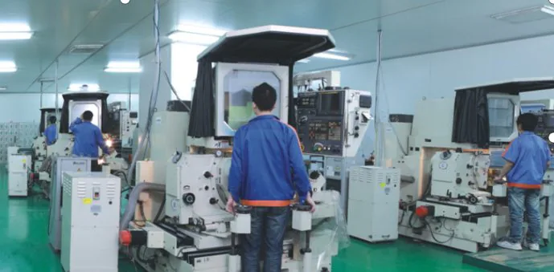

Technical Blog
What is PG Grinding?
A practical guide for purchasing managers, mechanical engineers and quality engineers evaluating profile grinding for carbide punches, formed edges and high-accuracy mold components.

What PG Profile Grinding Does
PG generally refers to profile grinding: grinding a defined contour or formed edge rather than only a flat surface. Optical profile comparison and CNC-controlled motion can support this work, depending on the equipment and inspection method.
For precision tooling, relevant features include carbide punch outlines, mold insert profiles and miniature blade edges. The working contour may control fit, cutting behavior or the shape produced by the tool. It must therefore be related to the component’s locating surfaces, not inspected as an isolated outline.
Punches, Inserts and Formed Edges
A profile can include straight sections, radii, angles, steps and reliefs. The grinding review considers wheel access, edge support, thickness and the condition of the material. Thin sections and abrupt changes in shape deserve attention because they can increase the risk of damage during machining or handling.
For a connector punch or precision stamping insert, identify the edge that does the work and the surfaces that locate it in the holder. Explain whether replacement parts need to remain interchangeable. These functional details are more useful than applying the tightest tolerance to every dimension.
Jinyi Precision’s PG Reference Values
Jinyi Precision operates 6 WAIDA PGX-2500SP profile grinding machines. Its PG precision grinding references are:
- Minimum corner radius: reviewed against the drawing
- Reference machining tolerance: ±0.002 mm
- Surface finish: reviewed against the drawing
Achievable results depend on component geometry, material and machining conditions. These references apply to PG precision grinding; they are not guarantees for every material, feature or workpiece, and do not establish the capability of wire EDM, mirror EDM or other grinding operations.
Profile Grinding and Other Grinding Operations
CNC describes machine control, not a single material-removal process. A CNC form-grinding operation and a PG profile-grinding operation may address different features within one route. Separate the formed outline from flat datum faces, steps and assembly surfaces when reviewing the quotation.
Blank preparation or wire EDM may precede final grinding. Surface grinding may finish a reference face, while an EDM operation addresses a feature the grinding wheel cannot reach. The route should identify which operation finishes each critical surface. See wire EDM process considerations when the contour needs preparation before grinding.
Define the Profile and Its Acceptance Method
A dimensioned profile should show the datum system, angles, radii, reliefs and required finish on the working surfaces. State the material grade and condition, any coating requirement and the permitted edge treatment. A supporting model helps explain how the contour relates to the rest of the component; it does not replace the toleranced drawing.
Optical comparison can help verify the outline, but projection orientation and datum alignment must be agreed. Thickness, height and positional relationships may need other measurement methods. Jinyi Precision owns and operates a Hexagon 686 coordinate measuring machine (CMM) in-house. Dimensional inspection follows the project requirements and agreed inspection plan. The selected instruments should match the features being accepted.
For an insert with several locating faces, review datum planning across machining operations. A contour that appears correct in projection may still need its position checked relative to an assembly datum.
Sampling and Repeat Orders
For a new component, agree the drawing revision, material, inspection orientation and measurement method before sample acceptance. If the part will be coated, define whether the working profile is accepted before coating, after coating or at both stages. Coating allowance should be considered before the edge is finished.
Keep the accepted drawing and inspection method linked to the part number and revision. For replacement punches, a changed datum interpretation can affect interchangeability even if individual dimensions appear acceptable. An agreed reference makes later orders easier to compare without promising identical performance under different operating conditions.
Planning the Work
Profile complexity, grinding access, edge condition, setup and inspection all affect the quotation. A small component with several related features can require more work than a larger, simple profile. Identify the functional requirements and quantity so the route reflects the part’s actual use.
For carbide tooling, include the specified grade and the support or holder arrangement where it affects the edge. The review can then address profile preparation, grinding, protection during handling and final acceptance as one sequence.
Related Guides and Capabilities
Send an Inquiry
Send drawings for review
Email your drawings directly, or use the form for an initial inquiry. Please include the material, quantity, critical tolerances, surface finish and required delivery date. You do not need to submit the form before emailing us.